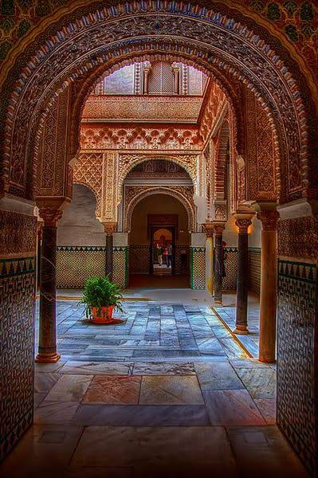

The Man Behind the Title
Abd al-Rahman ibn Muawiya was born around 731 in Syria, into the ruling Umayyad family. His grandfather was the caliph Hisham, and his mother came from a Berber tribe of North Africa, a detail that would save his life and shape his future. He grew up in comfort, expecting a life at the centre of the largest empire the Muslim world had known.
In 750 that world collapsed. The Abbasids overthrew the Umayyad dynasty and hunted down its princes. Abd al-Rahman, still a young man, escaped with a few companions and began years of wandering through Palestine, Egypt and North Africa. He moved from one hiding place to the next, sometimes sheltered by his mother’s Berber relatives, always one step ahead of Abbasid agents.
Al-Andalus, the Muslim-ruled Iberian Peninsula, was torn by rivalries between its governors and tribes. Abd al-Rahman saw an opening. In 755 he landed on the southern coast of Spain, gathered Umayyad loyalists, and marched on Córdoba. He defeated the governor Yusuf al-Fihri in 756 and took the city, declaring himself emir at about twenty-five years old.
Ruling was harder than winning. He spent decades putting down revolts, resisting Abbasid attempts to remove him, and holding off a Frankish campaign in the north. By the end of his reign he had turned a divided province into a stable state with Córdoba as its capital, laying the foundation for a dynasty that lasted nearly three centuries.

Key Moments
-
c. 731
Born in Syria into the Umayyad ruling family.
-
750
The Abbasid revolution ends Umayyad rule in Damascus. He flees.
-
755
Lands in Al-Andalus after five years in exile.
-
756
Wins the battle against Yusuf al-Fihri, enters Córdoba and becomes emir.
-
763
Defeats an Abbasid-backed army sent to remove him.
-
778
The Frankish king Charlemagne campaigns in the north and withdraws.
-
785
Begins building the Great Mosque of Córdoba.
-
788
Dies in Córdoba, leaving a stable state to his son Hisham I.
“The Falcon of Quraysh.”
Why He Still Matters
Abd al-Rahman I proved that a single person with courage and patience could rebuild a fallen dynasty from nothing. His emirate became the base for the Caliphate of Córdoba, which grew into one of the most advanced centres of science, architecture and learning in medieval Europe.
The Great Mosque he started in Córdoba is still standing today, and its red and white arches remain one of the most recognisable images of Islamic Spain. Every visitor who walks under them is walking through the legacy of the man who crossed the sea to begin again.